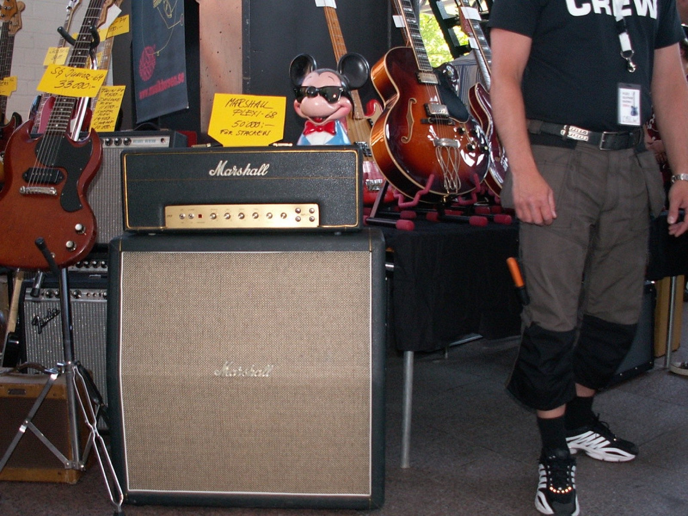

The song
“The Oaf (My Luck Is Wasted)” was the lead single from Big Wreck's debut In Loving Memory Of..., recorded by a band formed around Thornley at Berklee College of Music in Boston — a Canadian singer-guitarist, an American rhythm section, and a sound that treated 90s heaviness as a foundation rather than a costume. The lyric is a gambler's lament, luck personified and spent; Thornley delivers it with the dynamic control of a singer trained in rooms where you have to mean every note. The quiet-loud architecture — verses almost whispered over a churning riff, choruses detonating on the title phrase — became the band's signature grammar.
The reception and the quiet years
The album went gold in Canada and the US, “The Oaf” became a rock-radio fixture, and follow-up single “Blown Wide Open” cemented the reputation. Big Wreck should have been an arena act; instead the 2000s intervened — label turbulence, a breakup, Thornley's solo career under the name Thornley. The band's catalog, though, kept growing its congregation: guitar players studied Thornley's tone; singers studied his phrasing; and “The Oaf” never left Canadian rock radio.
The return
The 2010s reunion of the original Big Wreck — and records like Ghosts (2014) and Grace Street (2017) — proved the band was no nostalgia act, with Thornley's guitar playing deepening into one of the most distinctive voices on the instrument in Canadian rock. But “The Oaf” remains the foundation stone: a debut single that told the whole story in four minutes — the riffs, the ache, the discipline, the luck. Sometimes a band's entire identity arrives fully formed on the first try.

Frequently asked questions
Who sang “The Oaf”?
Big Wreck, fronted by Canadian singer-guitarist Ian Thornley; it was the lead single from their 1997 debut In Loving Memory Of....
Is Big Wreck Canadian?
Half: the band formed in Boston around Thornley (raised in Toronto) and American musicians, and found its largest audience in Canada.
Are Big Wreck still together?
Yes — reunited in the 2010s, they've released several well-received albums and continue to tour.